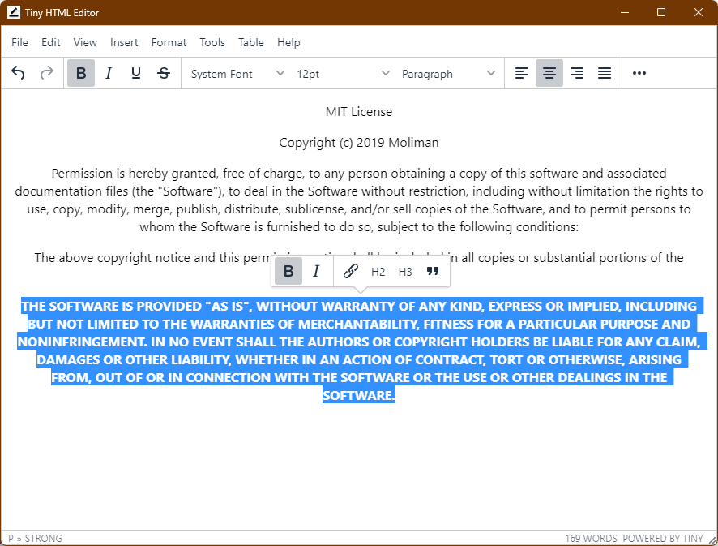

Tiny HTML Editor
A small desktop editor for HTML files. Open a page, edit it like a word processor, and save clean, indented HTML. Built on TinyMCE and Electron, free and open source.

What it does
Rich text editingFonts, headings, lists, alignment, colours, tables, links, images and media.
Real filesOpen, Save and Save As work on HTML files on your disk, with relative image paths kept intact.
Clean outputSaved HTML is beautified with two-space indentation, so it stays readable in a code editor.
Source viewSwitch to the HTML source at any time, or preview the page full screen.
Quick toolbarSelect text to get bold, italic, link, heading and quote buttons right where you are.
Cross-platformBuilds for Windows, macOS and Linux (AppImage and .deb) with every release.
Installing
Windows: run the installer. macOS: unzip and drag the app to Applications. The app is not signed, so the first time, right-click it and choose Open. Linux: make the AppImage executable and run it, or install the .deb:
sudo apt install ./Tiny-HTML-Editor-*-linux-amd64.deb
Building from source
git clone https://github.com/abbychau/tiny-html-editor cd tiny-html-editor npm install npm start
Found a bug or want a feature? Open an issue on GitHub.